Free to forkNo licence and no copyright claim: build this game under your own name, or lift one idea from it. Why?
Game overview
TopVerse is one universe made of thirty-odd small top-down games. You make a decision on the map of your region, play it out as a twin-stick action game on foot or at the controls of a vehicle, and the result permanently changes that tile, its region and everything above it. Then you make the next decision.
All the games stand on one framework: a character with ten item slots, fully destructible levels, simple physics, and generators that build levels and whole campaigns on demand. What changes is the job. One session the ten slots hold extinguishers for a burning apartment block; the next, foam dart blasters for a shopping mall, the weapons of a four-ship fleet, or the psychic powers of someone who has just woken up to them. The games run from a microbe curing a disease to god machines duelling in hyperspace, and from tending a garden to raising a city.
The universe is in equilibrium: nothing bad comes to you unless you go and poke it. Every session is as cozy or as violent as you choose, and the world keeps what you did either way.
It grew from two places. One is a decade of modding Cortex Command, whose data-driven content turned up in any scenario and made every session different, yet reset to zero each time. The other is Syndemic, a microbe shooter by the solo developer Adjuvant, which Reactorcore beta-tested and wrote a long overhaul report for. The report's systems turned out to fit almost any theme. The region map owes a debt to Advance Wars, the fleets to Starsector and Battleships Forever.
Target audience
Players who love a game's mechanics and feel robbed when its campaign ends just as they've learned to play, so the skill they built has nowhere left to go.
People who want a different kind of evening each time (an hour of mayhem, an hour of gardening, an hour of hauling cargo between stars) and are tired of games that can't talk to each other, where a vehicle section is a cutscene and a city is a menu.
The surface is twin-stick: move with one hand, aim with the other, ten slots and an interact key. Every subgame keeps the same controls.
Game's purpose
Freedom and choice: whatever kind of play you're in the mood for, at whatever scale, whenever you want it.
Enjoyment and variety: action, leisure, building, exploring, strategy and silly fun, each a whole game of its own.
Meaning: every session leaves a permanent mark on a world that keeps it.
It avoids draining safety (nothing hostile comes unprovoked), rest (sessions are short and end back on the map, saved) and respect for your effort (what you learned and built never resets).
Core concept
Most games are silos: a campaign that ends, a genre that can't borrow another genre's systems. Roguelites reset you at the climax, and sandboxes run out of reasons.
TopVerse is a campaign generator for many kinds of game, hung on one persistent map. Each session is a finite campaign of 10 to 40 minutes with a start, a middle and an end. The universe they all change never ends.
Content is modular data, so it multiplies: a new tool works for every character in every subgame, and every new subgame inherits the universe.
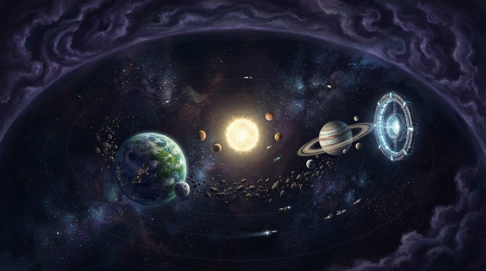
"Nothing majorly bad ever happens unless you go and poke it. The universe waits for you to decide."The equilibrium universe
Lore and story
A universe at rest
TopVerse's universe has settled into calm. Its dangers are real (monster territories, despot armies, contaminated zones, the crushing depths of planets and stars), but they stay where they are. From outside, only neutral or good things wander in, rarely and slowly. The interesting things are out there, and so are the risks, and you decide when to go and meet them.
It is huge but finite: star systems in sectors, sectors in galaxies, galaxies in clusters, and around all of it the Wilderness, a chaotic border where everything lost ends up. Civilisations use matter and energy, which bleed away as heat and drift to the Wilderness. There they mix, build up and finally erupt back through the universe's darkest sectors as new material. Nothing gets stuck, and nothing runs out.
Where you begin
You start as a villager in a local region. The intro zooms from the planet down to your tile and into your boots, and most of the map around you is fog, with hints and warnings from the locals about what lies in it.
You choose whether to build up the village first or head out and gather what you need along the way. You have a home faction, and you can join other benevolent ones and gain their tools, people and systems. Meet an enslaving despot's army unprepared and it can overrun your village. Then the story becomes a guerrilla resistance, an escape to a neighbour's village to return stronger, or a rise through the despot's own ranks to bring them down.
The goal right now
To grow, to prosper, and to live the way you like. Push back the fog with scouts, towers, probes and satellites. Take your region, then the continent, then the planet, then the stars. Or stay home, decorate the house and help the neighbours. The universe doesn't need saving. It needs you to decide what to do in it.
Controls and interface
Every subgame uses the same twin-stick controls, on a keyboard and mouse or a gamepad. What you control changes; how you control it doesn't.
On foot
WASD
Move (left stick)
Mouse
Aim and face (right stick)
Left click
Use the item in the active slot
Right click
Its second function
Slots and items
1–0
The ten item slots of your current role
Space, Shift
Auxiliary abilities: dash, jump jets, shields
E
Interact: doors, vehicles, pickups, people
B
The shared backpack: escape items, resupply packs, switch kits
Vehicles and fleets
WASD, mouse
Drive and aim, exactly as on foot
Click
Fire the selected weapon group, or all of them at once
2, 3, 4
Unpack that fleet ship from the flagship, aim where it lands
E
Dock on the flagship, or pass through an arena door
Region view
Click
Move to a tile, or act on it
Hover
A character's portrait, name, role and condition
Tab
Switch character, or gather a squad
Esc
Pause anywhere; every decision is saved
A vehicle plays like a character. Its controls, mobility, weapons and abilities come from the modules installed inside it, so a tank, a submarine and a starship are all driven with the same two hands. Characters are drawn simply, as a body sprite, floating hands and whatever they hold, and their faces live in a portrait that pops up when you hover over them, with emotion overlays: sweat drops, anger marks, a question mark, a bright idea.
The world is stacked in layers (sky, surface, underground, and further up and down), and things on other layers are drawn as ghosts: shrunken and darker below you, faded silhouettes above. Shooting up or down to another layer is a deliberate action aimed at a cell, never an accident.
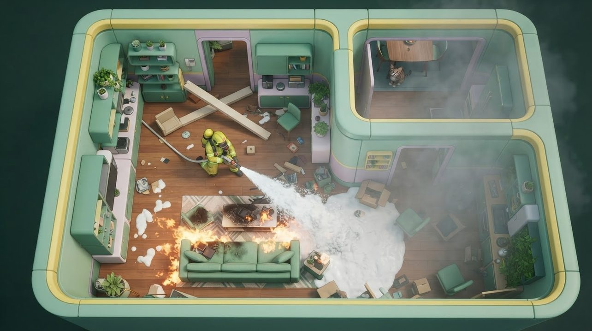
"As a firefighter, the ten slots hold extinguishing agents, and each kind of fire needs the right one."
One decision, played at any scale
The heart of TopVerse is a loop Reactorcore calls the combo game flow. It turns a pile of separate games into one game, and it's the same at every scale, from a village to a galaxy.
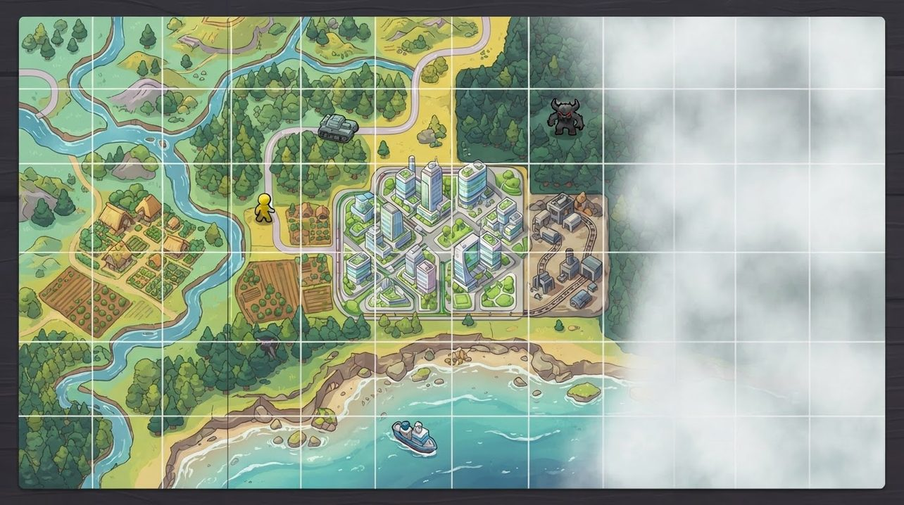
"The region view is where you decide. Time only moves when you move or act, and there is no end-turn button."
DecideOn the region view, choose a tile and what to do there. The game saves.
Play it outOn foot in a room network, in a vehicle arena, or in a tunnel on the move
Come backWhatever happened: success, failure, a retreat halfway, or a change of mind
Ripple upwardThe tile changes, then its region, then the continent and above
The universe answersFactions and forces act on their own rules, with a little chaos
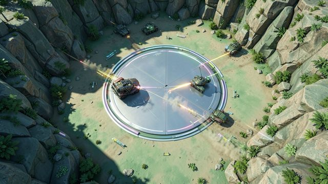
In a vehicleThe tile zooms out into an arena. Fleets of four fight around its central parking space and leave through doors in its edges.
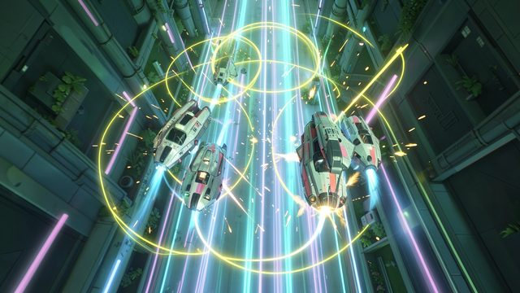
On the moveLong trips are played as tunnels: scrolling corridors where convoys can be chased, intercepted or shot at from afar.
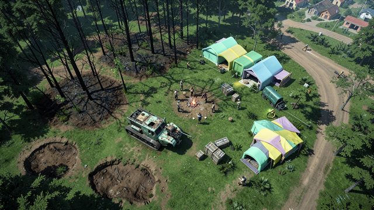
AfterwardsThe tile keeps the result. Craters, wrecks, survivors and new roads shape every room network generated there later.
From a room to the universe
The same map works at every zoom level. Each scale shapes the ones inside it (a continent gets its climate from where it sits among its system's stars, a region from where it sits on its continent), and a big enough change below pushes back up: a terraformed or devastated tile changes its region.
The universeAn even grid of galaxy clusters, ringed by the Wilderness.
A star sectorA 5 by 5 or 7 by 7 grid of star systems, or a void.
A star systemAn 11 by 11 grid: stars, planets, fields, gates, derelicts.
A celestialA planet, moon or asteroid of one to six continents, wrapped into a sphere.
A continentThree by three regions, about a thousand kilometres across.
A regionThe region view: 10 by 10 up to 25 by 20 tiles.
An area tileOne to ten square kilometres: a district, a farm, a mine, a forest. Persistent.
A room10 to 100 metres, on foot. Generated when you enter, gone when you leave.
And below the room there's one more scale: the microscopic one, where the whole thing began.
Game layers
Four layers. The action is the fun; the layers above it give it a reason, and none of them ever has to end.
01 · Moment-to-moment
Twin-stick action with a job to do
Top-down physics action in levels that break: walls come down, crates tumble, fires spread, and every hit lands somewhere. The core skill is the right tool for the right target, whether that's an antibiotic for a fungus, a foam extinguisher for an electrical fire or armour-piercing rounds for a tank.
Most jobs care about collateral damage. A cure that kills the patient, a cop who shoots bystanders or a mecha that flattens the shelter it was sent to protect all leave their mark on the world, and on how its people see you.
02 · Low metagame
A campaign of 10 to 40 minutes
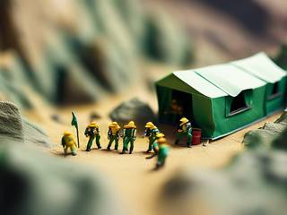
Every decision on the map opens a short generated campaign with a clear start, middle and end: a briefing, a chain of rooms, arenas or tunnel legs, objectives, and a debrief. It's built from the tile's real state, so a district you fought over generates rubble, scared civilians and a few wrecks.
The campaigns are "not about challenge nor permadeath", in the design's words. They can be calm or tense, short or long, and you can always leave early: a tactical retreat counts as an outcome, and the world takes it into account.
03 · High metagame
Your corner of a universe that remembers
The goal that never runs out is to grow, prosper and live: a village into a city, a region into a civilisation across the stars, or just a house you love coming home to. There is always somewhere wild, always someone who needs help, and always something new the generators haven't shown you yet.
Your settlements are hubs: persistent districts you customise, each with a nexus screen showing its status, resources, services and links. And every tile keeps its own history: the wrecks, the lost crews, the ruins and the messages left behind.
04 · Practical game flow
Pick a tile, play a campaign, stop
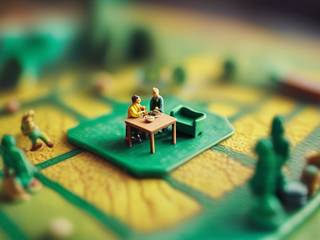
Boot up on the region view, where the game saved after your last decision. Pick something that suits your mood tonight: a riot to calm, a fire to put out, a monster nest to clear, a garden to tend, a convoy to escort. Play it, return to the map, and stop there or pick the next one.
Time only passes when you move or act. Nothing happens to your world while you're away, nothing nags you to come back, and a month off costs you nothing.
Game modes
Two ways in, sharing the same games.
Mode
What it is
What it's for
Quick play
Any subgame as a self-contained, throwaway campaign that doesn't touch your universe
Playing one game as its own title: a fire to fight or a derby to crash on a lunch break
Persistent world
The whole universe, with its mysteries, places, hazards, calamities, discoveries and opportunities
Living in it: every session changes the world for good
In the persistent world you play solo or with your own gathered squad of characters, and you can step into the boots of a random civilian or soldier to see the world as a stranger does. Online cooperative play is on the design's growth list. Nothing in it is competitive.
From a village to the stars
The persistent world has a beginning and a middle, and on purpose, no end.
Start
A villager in a fogged region with a home faction, a few warnings from the locals and the whole world to uncover. Early on, recovering from a disaster is cheap.
You're immortal, but your faction isn't. If it's wiped out and you haven't risen in a friendly one, time skips and you start over in a new village, and the ruins of the old one stay for others, or you, to find.
Middle
Expand from a region to a continent to the whole planet. Build fleets of vehicles and mobile bases. Go underground and underwater, then to orbit, the star system and beyond, and build trade lanes, jump gates and defences as you go.
Events keep arising in your territory where you can step in and help, and travel can stir up armies, outbreaks and calamities, usually with warning signs ahead.
No end
Even after you've conquered everything, the universe is too big to tame. Some places stay wild, your people always have needs, the deep layers and the Wilderness hold oddities, and the wildlife keeps the ecosystem working, nice mixed with nasty so neither can be wiped out.
In the end, as the design puts it, the focus shifts "from destination to the moment-to-moment fulfillment and exploration of the already discovered world; to live in it".
A bigger empire takes a bigger disaster
A small village can be overrun by one army. A big civilisation is more stable, and it takes something proportionally huge to hurt it. Disasters come from calamities, which the player sets off, so even these wait to be provoked.
What you hold
What it would take to shake it
An area tile
A nuke
A region
A colony ship dropped from orbit
A continent
A moon colliding with the planet
A celestial
A nova, a planet-killing superweapon or an invasion
A star system
A supernova or a hyperweapon
A star sector
A machine war, a brood fleet or a chaos eruption
A galaxy
The galactic core detonating
Against an ordinary threat like an enemy army, you can also submit: give up resources, people, fleets and structures and accept restrictions, and live to try again.
Thirty-three games, one universe
Reactorcore's list holds 33 subgames in seven groups, sorted by the scale they play at. Each one is a small focused game, playable on its own in quick play or as one activity in the universe. Some are worked out down to their toolkits; others are a title and a promise, waiting for the framework to carry them.
Scale
Subgames
Microscopic
Omnicure: an artificial microbe that cures diseases without killing its patient, the game the whole design grew out of.
Human-sized
Regime Eradicator and Corporate Crime Slayer (cathartic power fantasies against fictional tyrants and abusers); the civil service jobs: Police Enforcer, Fire Fighters, Rescue Team, Off-Road Trail Engineer, Parkour Gadgeteer, Radical Janitor, Mad Dash Medic, Zoo Pacifier; the alien and monster wars: Machine Uprising, Ballistic Weapons, Phantom Purge, Extraterrestrial Overkill; the fighters: Super Warrior, Astral Psychic Vengeance; the monsters: Evolver Devourer and Miner vs Beasts; the kids: Tacticool Teenage Operator; and the default, Off-Duty Life.
Minor vehicles
Crash Car Derby, Tunnel Travellers (convoy defence and interception), Super Warrior 2 in power armour.
Mega vehicles
Fleetstorm (momentum-driven ship combat on land, sea, air and space), Eradication Wars (mecha against mecha), Kaiju Defence, Kaiju Attack (as the kaiju), Cyber Kaiju Attack (a kaiju fighting beside the mecha), Super Warrior 3 as a mecha.
Hyperspace
Hyperspace God Mecha: giant machines with celestial-scale superweapons, jousting in hyperspace tunnels.
Area and region
City Builder / World Terraformer: premade, pre-balanced blocks on the ground, at sea, underground and in space.
Region and above
Sunshine Heavy Industries: a puzzle-like transport tycoon of metros, rails, hyperrails, trade lanes and jump gates.
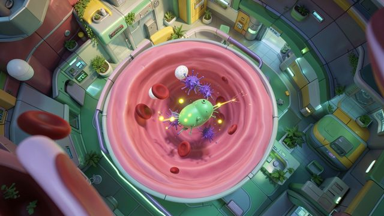
OmnicureThe body as a city: organs are districts, blood vessels are highways with currents. Hit the patient's good cells and the patient pays.
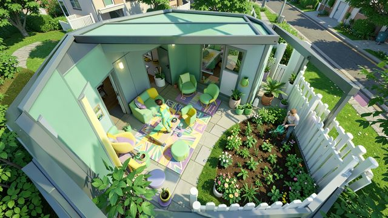
Off-Duty LifeWhat every character goes back to: decorating, chatting with the neighbours, and crafting and moving goods around the settlement.
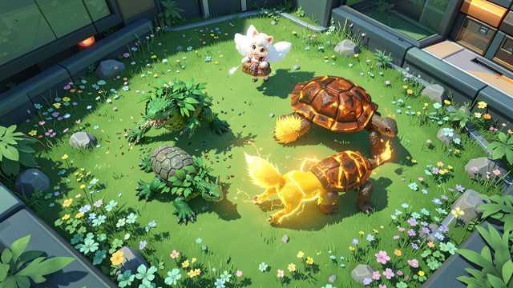
Evolver DevourerTrading-card monster battles played in real time, with wind-up attacks and three to six swappable monsters. In the universe, they're the wildlife.
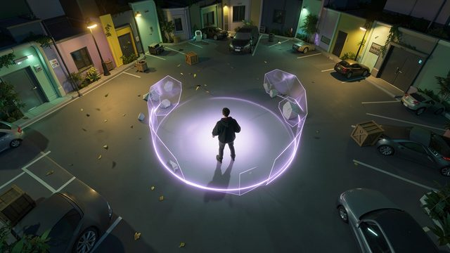
Astral Psychic VengeancePowers of nearly limitless strength with a three-metre reach, so every fight is about closing the distance creatively.
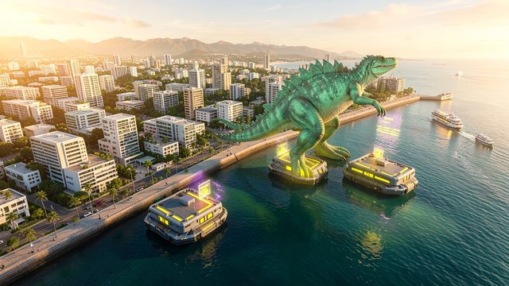
Kaiju DefenceGiant machines between a huge monster and the city while civilians get clear, with as little collateral damage as the city can afford.
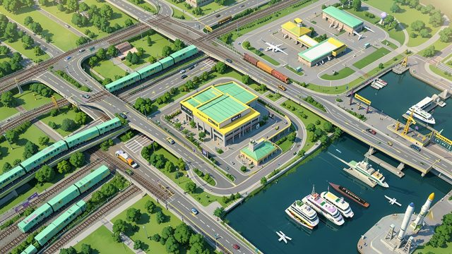
Sunshine Heavy IndustriesNetworks at every scale, from city metros to interstellar jump gates, built for the lowest cost and the easiest maintenance.
Games that combine
Many subgames are written as "combinable": the civil service jobs fold into one game of specialists, or of one character who changes class at role-specific supply pods, Thunderbirds style. In the universe this becomes a rule: you can take a role wherever its changing station and supply system exist. Police at a police station, firefighters at the fire station, a pilot wherever there's a vehicle and the key, suit or licence it needs. Every character, whatever their role, goes back to Off-Duty Life when the job is done.
Features and mechanics: one framework
Thirty games are only possible if they're one game underneath. These are the shared foundations.
Foundations
One character, ten slots, any job
Every subgame keeps the same core: a top-down twin-stick character with up to ten active item slots and auxiliary ability buttons, fully destructible levels, simple physics objects, a level generator and a campaign generator. A new subgame changes only the content: the theme, the character, what the slots hold, the objectives and the generator's parameters.
Role
What the ten slots hold
Omnicure
One antibiotic weapon per kind of disease, a mover tool, and an omniweapon that kills anything but harms the patient
Fire Fighters
Extinguishing agents for each kind of fire, with gas mask filters refilled at safe spots
Police Enforcer
Taser, net, tear gas, baton, rubber bullets, cuffs and flashbangs
Miner vs Beasts
Welders, saws, hammers, drills, torches, tethers, explosives, acid and a water hose
Tacticool Teenage Operator
Foam dart blasters, water guns, fireworks, a walkie-talkie and a listening dish
Regime Eradicator
Light and heavy calibre, siege, flame, EMP, chemical and a super weapon, plus first aid for civilians and a tool to move bystanders out of the way
How slots fire varies too: one weapon at a time, every selected weapon together or as an alpha strike for ships, paired slots for mecha, or several weapons cycled within a slot. Enemies and objects come in standard tiers, measured in shots of a benchmark weapon, from a small one at half a shot to a massive one at nine. The rules: "nothing is indestructible", and "no bosses, no sponges, no invulnerability". What would be a boss elsewhere is a huge regular here, and it can turn up anywhere.
Levels that multiply
Rooms that exist only while you're in them
Every on-foot zone is a room network generated for its tile: entry rooms, corridors, locations and transit rooms that act as stairs to the layers above and below, joined by doors, with several routes and a few dead ends. It's never stored as a map, only as which door leads where, and it's deleted when you leave. Come back and you get a new one, shaped by the same tile: a forest tile gives wild trails, a city tile gives streets and catwalks.
Each room is built on a three-by-three grid of anchors, with eight door positions around a centre, for terrain islands, corner emplacements, wall fixtures and safe or dangerous spawn zones, and a small chance (1 to 5%) to randomise freely within the rules. Doors open with a key press, never by script: a door is held shut only by a guardian or a barricade you can blow open.
Every room has a way out. Escape items in the shared backpack get any character out of a room network and back to the map: a wall buster that blasts a new door, a drill digger underground, a ballast dinghy underwater, a balloon that lifts you through every layer (shootable on the way up), an escape pod in orbit.
The heart of it
One structure, five faces
Every building is a DRC (district room complex), and every major vehicle, ship and mobile base an MDRC, a mobile one. Each one exists at every zoom level at once, so the same ship can be walked through, fought, flown and traded:
Face
Where you see it
What it is
Entrance
On foot, outside
The outer cells you walk around and into, up to 20 by 20 cells of two metres
Interior
On foot, inside
Every entrance cell is a three-by-three room inside, all on one floor
Facade
Vehicle arenas
The zoomed-out vehicle, its shape and weapons set by the modules inside
Map icon
Region view
A piece on the map
Data node
Further out
Pure data, until you get close
The interior's modules (cockpit, thrusters or wheels, turrets, a reactor, a vehicle bay) define a simple rectangular vehicle with its true collider, and an optional freeform facade is drawn over it to make it look like anything. Break through a boundary wall from inside and you drop out "from above" onto the matching cell outside. Separated cells work too: each sits on its own wheels, hover skirt or thrusters, joined by a frame of girders or living struts.
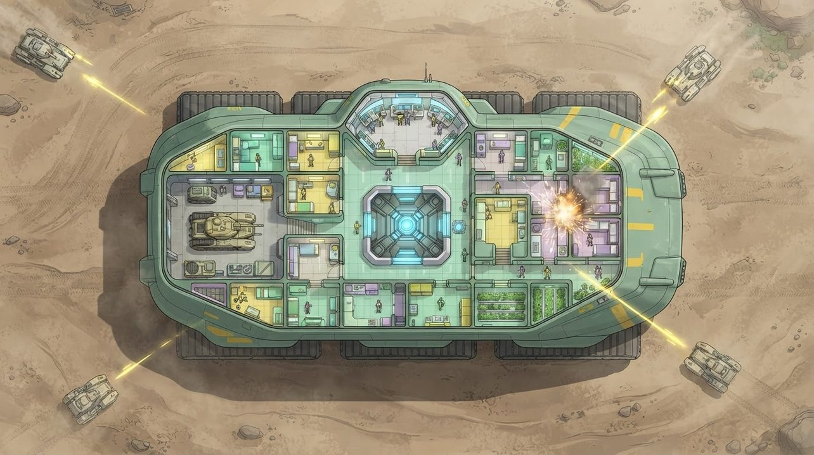
"The base you shoot at from outside is a floor plan you can walk through, and a shot that penetrates lands in one room of it."
Destruction with rules
Hits that land somewhere
A vehicle or building has one pool of health, and its strength comes from what it's made of: size, material and how much of it. Hull hits chip away at the entrance's walls and struts; break them all and the whole structure collapses into rubble where it stood, its contents scattered.
Some hits penetrate. Each one is weighed (payload, type, armour, thickness) and either stops at the hull, goes inside and stops, or goes straight through and out the other side, maybe into something else. A penetrating hit lands on one random interior room, "from above", where the heaviest things and any absorption armour take it first. Interior hits never bring a building down. They wreck what's inside it.
Fire is one system for every game: a global fire manager spreads flames from object to object, slowly, with each object's material deciding how fast it catches and how long it burns, and nearby fires merging into one. It was designed for Fire Fighters, and it burns the same way in every other subgame.
Features and mechanics: vehicles, fleets and travel
The same rules carry you from a car to a starship, and from a region map to the far side of the galaxy.
Fleets
Four ships and a flagship
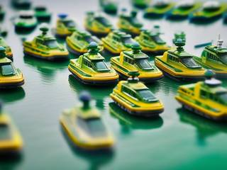
Vehicle combat is fleet against fleet. A fleet is up to four ships of any size, and any ship with a docking gantry can be the flagship. Fly a ship over the flagship's docking point and press E, and it slides underneath, darkened and see-through, carried as a node. Press 2, 3 or 4 to unpack it again: aim where it should appear on a ring around the flagship, and an outline turns green when the spot is clear.
Pack a fleet to cross terrain only the flagship can (a boat across a desert, a car through space), to shield a fragile ship in a fight, or to squeeze through a narrow passage. Any ship can carry any other, "even if it's comically larger", but the APC effect applies: lose the flagship and everything packed inside goes with it. A cooldown on docking stops anyone popping armour bricks out in front of incoming fire. Enemies use the same rules, so a packed enemy fleet caught before it unpacks can lose four ships at once.
On foot, a packed fleet is a plus-shaped room: the gantry in the middle, the four docked ships around it, and four empty corners where raiders, infiltrators or rescuers come aboard.
Vehicle arenas
Doors with requirements
A tile's vehicle arena has a parking space in the centre, where the local fleet launches from and where you stop to start on-foot missions or regional actions like long-range fire and scans. Its exits are directional doors to the neighbouring tiles, up to four per side, no diagonals.
Each door has requirements, like a door on foot: ground propulsion for a road, a hull for the sea, wings or thrusters for the sky, and each layer has its own doors. A ground car that drives into the ocean sinks on the spot. With fewer than four doors open, some ships pack into the flagship to move on together.
To leave, drive onto a door and press E. If your momentum points within its 90° window, you keep it and slide out in a no-physics "ghost mode", still shootable until you're gone. Speed gets you out faster; a heavy, slow ship takes longer to leave a fight.
Vertical layers
From orbit to the core
Every place is a stack of layers, and every kind of world has its own. They're described with one grid of solids, liquids and gases:
Depth
Solid
Liquid
Gas
Top
Surface
Shallows
Fog
Under
Underground
Underwater
Under fog
Deep
Bedrock
Depths
Deep fog
Above sit sky, high atmosphere and orbit; below, the crust, the mantle (shown as a side-scroller) and the core. An Earth-like world is surface, soil and bedrock; an ocean world shallows, sea and depths; a gas giant all fog down to metallic hydrogen. Stars, neutron stars and black holes have layers too, for those with vehicles that can dive them.
Vehicle combat happens in the middle band of sky, surface and soil or sea; going higher or deeper is a way out. Altitude bands have overlapping thresholds so nothing flickers between layers mid-fight: climb past 500 metres to reach the sky, drop below 250 to come back down. Jumping doesn't change layers. Only propulsion does, and without it, things fall and land hard by their mass.
Tunnels
One corridor for every journey
Long trips are played as tunnels: temporary scrolling corridors from A to B, horizontal or vertical, with controlled acceleration and some room to manoeuvre. The same idea serves roads, rails, rivers, the sky, underground, underwater, space and hyperspace. Each segment generates the terrain of the tile it crosses, side exits drop you into the neighbouring tile, and there's no timer and no rush. Others can find a tunnel and enter it at the start, middle or end, which makes it the place for races, chases, interceptions and convoys.
The long-range trips need a drive shaft: a component that binds a fleet for transit, propels it (FTL, sublight, orbital, through the ground or the mantle), defends it with point defence and countermeasures, and clears the path with a forward plasma lance that only works away from celestials. On foot it's reached through drive shaft nodes in the interior. Destroy them all and the drive shaft is gone, so they're what boarders go for. And every jump leaves clues at both ends, which is how chases start.
In space, every star system is an 11 by 11 grid of arena tiles. Sublight goes tile by tile and can't be targeted by anti-FTL guns, which makes it the quiet way in. FTL jumps anywhere in the system that isn't blocked, and between stars. Hypergates catapult you one way across the universe.
Interdiction
Running the anti-FTL gauntlet
Star systems defend themselves with anti-FTL gun arrays, and you can be the gunner or the target. The gunner aims a reticle that starts large: each shot lands at a random angle and distance from the crosshair. Moving it makes it bigger for a moment; holding still shrinks it to a minimum set by range, weapon, weather and jamming. Shots appear in the background first and grow sharper as they near their impact point, so the gunner peppers where the traveller will be.
The traveller dodges inside a manoeuvring box, speeds up or slows down to throw off the aim, flips like a Star Fox ship at the cost of distance, and answers with countermeasures and point defence. There's a minimum speed, so no stalling. Three kinds of gunner share one reticle: direct fire at an invader coming straight in, potshots at someone crossing the system, and chasers firing after an escapee. The arrays overheat, longer range means a slower rate of fire, and the medium matters: asteroid fields block shots, gas clouds blind the gunner but feed the traveller's lance.
Features and mechanics: a universe that remembers
The framework makes the games. These make the universe a place to live in.
Cozy or intense, your call
Nothing comes unprovoked
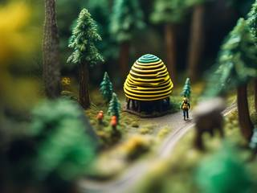
The universe settles into a lazy, dormant state. Dangerous areas never come to you first. To gain something new you go into volatile places, and there you risk triggering a calamity: a crisis over a region that will leave a permanent negative or neutral change unless you stop it, defuse it, clear it or conquer it.
In the design's own example: "If I go bother a bees nest in an unexplored zone, it may create a calamity that will threaten the cozy side for that area if not dealt with." One calamity can set off another, but none can end the universe; at worst you relocate and regroup. Once your core settlement is established it usually stays safe, and the risk moves out to your frontier outposts and colonies.
The universe generator
Contents, not biomes
"Remember: no specific biomes." A tile isn't a desert or a forest template. It's a list of contents: humid or dry, acidic or neutral, how much life and what kind, which structures, which geological features (holes, cliffs, ravines), which water (a lake, a river, a pond), and what its solids, liquids and gases are made of. The generator reads those and draws whatever they add up to, desert, forest, city district or any mix.
Contents come from the spheres of influence: each scale sets the conditions for the ones inside it, from the universe's laws of nature down to the room you're in, with a small chance of a chaotic mutation at each step. So every tile makes sense where it is, and it carries its history too.
Nothing is stored as a map. Tiles keep hard data for what's tangibly there, and maps are generated from the same seed when needed, with any changed contents shaping the result. An Earth-like planet is at most about 108,000 data points, a ten-by-ten universe holds some 432 million potential celestial locations, and everything is generated only when you first get there, only as far as needed. Save files stay a few megabytes.
Persistence
Live in the moment
Most of the universe isn't loaded and doesn't exist until you touch it. Touching it creates a temporary zone or route, which deletes itself when you leave and comes back new next time. What does persist is chosen carefully:
Hubs: your settlement districts, kept as you customised them, with a nexus screen and terminals for switching to the characters at its role stations, so a police or rescue job never needs a trip across the map.
Parking rooms: decorated plots where your buildings stand, in limited numbers per region.
Your buildings and vehicles: truly persistent ones (a personal HQ, a flagship, a mobile base) keep every item and piece of furniture exactly where you left it; semi-persistent ones remember their place, type, look and weapons and reshuffle the rest.
The truly persistent ones have a universe-wide quota tied to the save's size. Exceed a density limit and the chaos system steps in, the universe's own enforcer of performance, with chaos storms that grow until order is restored. Too much in one place is a natural law here, not a loading bar.
Who you play
You, your partners and the randoms
You play a group of characters one at a time, switching whenever you like, or field them together as a squad.
You: your own character, who always comes back after death. Bored of them? Change the look and press Rebrand, or switch between saved presets of name, colours, body, head and voice. You never have to reset a universe to feel new.
Partners: customised companions who join you as teammates, the council of immortals.
Randoms: rotating settlers from your own population, with their own names and looks, for living the world as a stranger. They die for good.
Death is an inconvenient setback, never an ending: a fallen character is out of action for a long stretch of in-game time and drops heirlooms to recover. If everyone is out at once, time skips forward and whatever calamity was under way gets its way. Time never rewinds.
Wildlife
Monsters that remember how you treated them
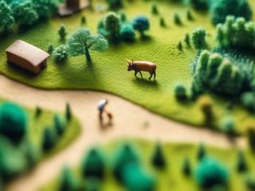
The universe's wildlife is the monsters of Evolver Devourer, from pocket-sized to kaiju. Each region keeps a fear and loyalty index for them: a general attitude toward people, with overrides per faction.
In a wild region, monsters may approach and attack like predators. Fight back and they grow afraid, avoiding people unless one looks weak and alone. Tame them instead (feed them, give them something nice, and set boundaries by blocking or dodging their attacks without hitting back) and they turn friendly. A monster tamed by your faction that sees your people attacked comes to heal, defend, fight or harass on their side.
A living history
Lost and found, scrolls and the Wilderness
Nothing that happens just vanishes. When a vehicle goes down, its crew ejects with whatever survival kit that vehicle carries (parachutes, dinghies, stasis pods, goo cradles) and becomes a rescue to pick up, or goes on the missing list, assigned to a tile and waiting to be found in a room network there on a later mission. Destroyed things become scrap in the tile's materials, and their remains turn up later.
Scrolls are messages attached to places, events and groups: welcomes, warnings, obituaries, recipes, songs, manuals, blueprints, threats and surrenders, with deeper tablets behind clearance levels named after the ranks of angels. Players can write their own and attach them to places they make.
And at the universe's border lies the Wilderness, a chaotic lost and found that recycles matter and energy and holds oddities, mutations and challenges made by other players, to duel when you choose to. Nothing bad pours out of it. You go in when you want to.
Trivia
It started as someone else's game
Syndemic was a crowdfunded microbe shooter by the solo developer Adjuvant: an artificial microbe destroying diseases inside the human body. Reactorcore beta-tested version 0.43 and wrote a very long overhaul proposal for it, which reached about a third of its planned length: patients as networks of rooms like districts of a city, blood vessels as highway rooms with currents, diseases as recipes for the generator, standardised enemy tiers, and collateral damage as the core tension. A note in the notebook reads "make Syndemic my way if Adj. fails". Adjuvant did give up on the game, and while reframing its systems as other games (a vigilante against a regime, firefighters, mecha, kaiju), Reactorcore noticed they were all pieces of one bigger puzzle. The microbe game survives as the smallest subgame, under a name from the old list of ideas: Omnicure.
Paper fleets
Fleet battles and pack-and-unpack scenarios were prototyped on paper first, with a Token Fleet Pack of cardboard tokens.
A power ceiling, written down
Astral Psychic Vengeance has awakening tiers named Super, Hyper, Mega, Tera, Ultimate and God, from just past 100% synchronisation up to 9,999,999%. Anything past 100% needs huge outside support (vehicles, structures, megastructures, a whole group's effort), so a lone psychic, in the notes' words, can't "casually" blow up a planet "with a random finger laser".
Three tries at one dream
TopVerse, RoomSpace and AAL Universe: Perpetual Boundless Freedom (once called Planet Warfare) are Reactorcore's three attempts at the same dream: a persistent universe to play in. Perpetual Boundless Freedom does it as one seamless side-view world, RoomSpace builds it from connected rooms, and TopVerse goes top-down, with many games on one region map.
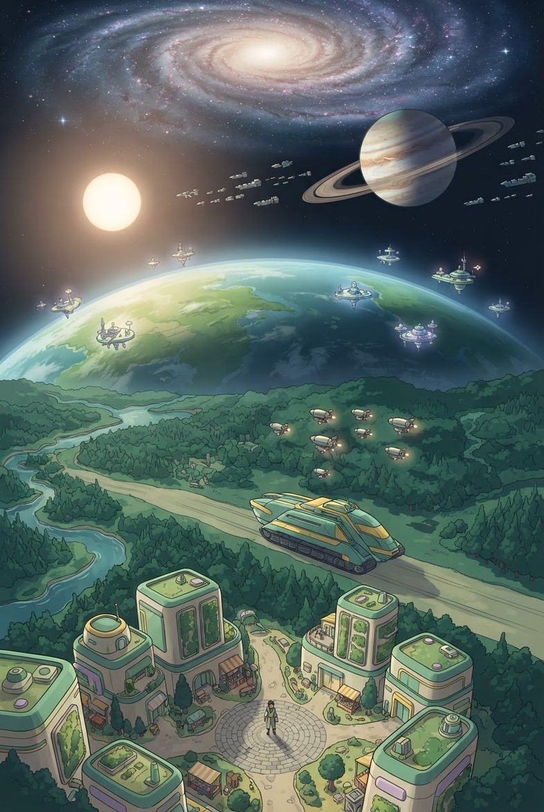
Regional notice: new arrival
TopVerse: Twin-Stick Universe Simulator
Welcome, villager. Your region is mostly fog. The locals say there's a mine to the north, a monster forest to the east and a despot somewhere past the river. The fire station is hiring. So is the garden.
Pick a tile. Fight a fire, chase a convoy, calm a riot, tame a beast, raise a city or fly a fleet to the next star. Whatever you do, the world keeps it, and nothing out there comes for you until you go looking.
Choose a tile. Play it your way. The universe remembers.